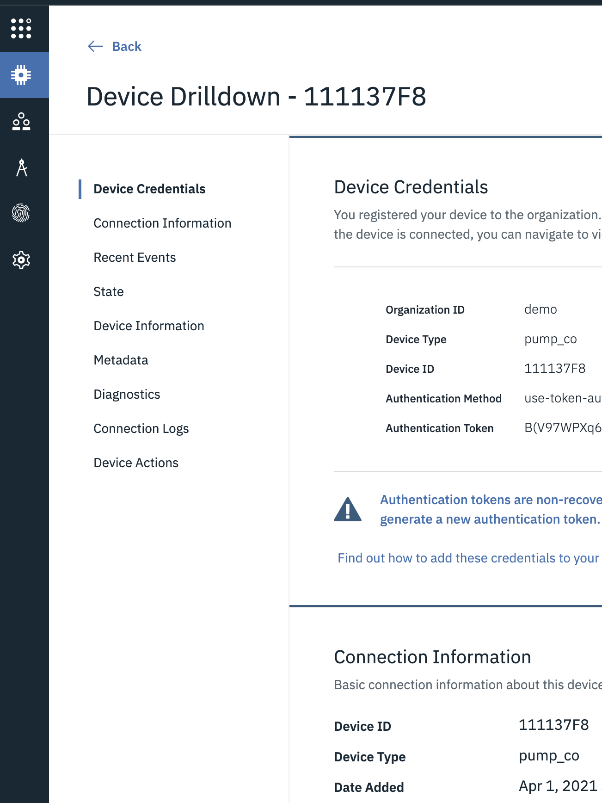
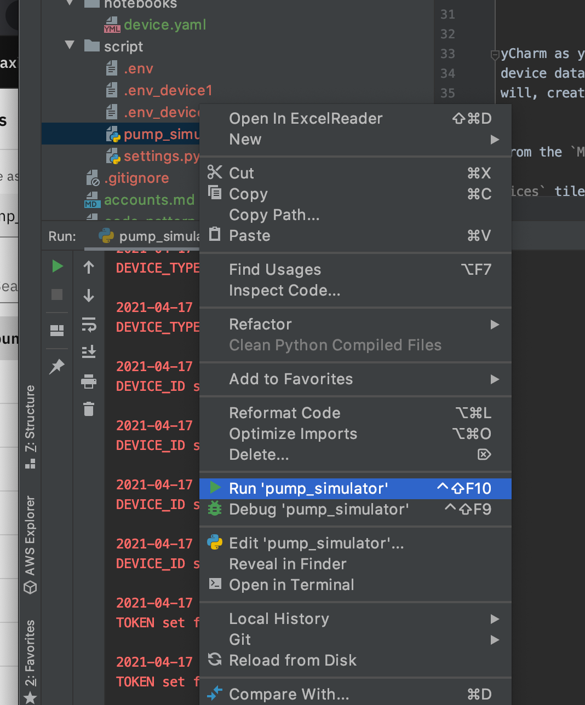
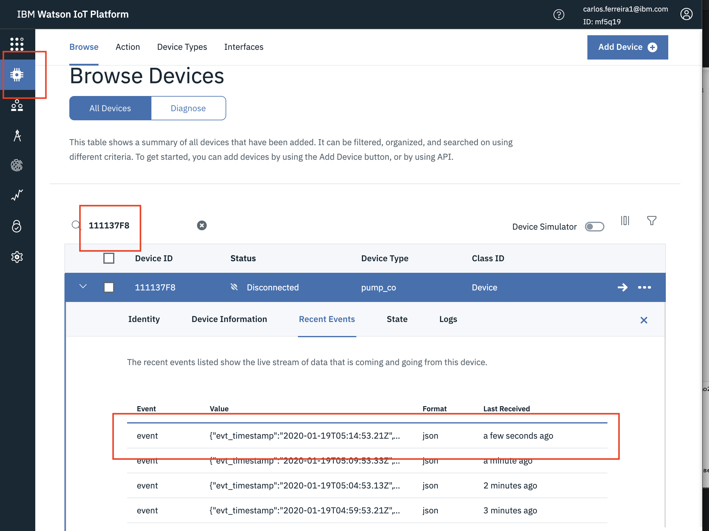

Send Device Simulated Data
In these exercises you will start sending pump data to Monitor IOT Platform. This will allow us to make predictions on power in the later exercises.
-
Update environment settings for pump devices.
-
Start Python Simulator for the 1 of devices.
-
Verify the Device data is being received by Monitor.
Update Environment Settings
-
The simulator needs to know the name of your organization, device type, device id and security Token. Edit the file named
.env_exampleand save it as.envusing the values below. -
Get the Organization, API Key and API Token from your MAS Administrator. Here is an example of the format of an example credentials file.
{
"tenantId": "your_TENANTID",
"_db_schema": "your_SCHEMA",
"db2": {
"username": "your_DBUSERID",
"password": "your_DBPASSWORD",
"databaseName": "your_DBNAME",
"security": "SSL",
"port": your_DBPORT,
"httpsUrl": "https://your_DBURL",
"host": "yourDBURL"
},
"iotp": {
"asHost": "your_TENANTID.api.monitor.your_TENANTNAME.your_TENANTNAME.cloud:443",
"apiKey": "your_IOTP_APIKEY",
"apiToken": "your_IOTP_APITOKEN"
}
}
-
Get the values for fields like
TOKEN,DEVICE_TYPEfor the devices you created in the Create Devices exercise for the 1 of pump devices111137F8 -
For
SOURCE_DEVICE_IDthis is the name of the Device ID in the source data csv file. See example file provided by the instructor named/data/maximo-auto_ai_pump_data_111137F8.csv -
For
DEVICE_IDthis is the name of the Device ID in the Monitor.
Start the Python Simulator
This exercise includes Python Simulator that reads a csv file maximo-auto_ai_pump_data_111137F8.csv.
with the pump data and sends the rows of data for the pump device you specified in the previous exercise. The event_payload.json
looks like:
json
{
"evt_timestamp": "2020-01-19T03:59:53.03Z",
"speed": 1141,
"head": 61.298,
"pump_mode": "a",
"flow": 1226.936,
"voltage": 438,
"POWER": 18.93,
"CURRENT": 32.6
}
1. If you are using PyCharm as your Integrated Development Environment select pump_simulator.py and right mouse click
select Run pump_simulator.py 
- If you are using a local virtual environment cd into
../scriptsand invoke the script by typing the following command:python3 pump_simulator.py
Verify the Device data
-
To be able to ingest device data using Monitor you must first define the format of the data using a Device Type.
In this exercise you will, create aDevice Typenamedpump_coand 2Devicesnamed11111096and111137F8. -
Login to Monitor from the
Maximo Application Suite Navigatorpage. Click
-
Click
Connect devicestile Or click On the
Or click On the Connect menu -
Click
Open Platform Service applicationin the top-right corner to open the Watson IoT Platform tenant associated with this Monitor tenant in a separate browser tab.
-
Go to the
Devicesmenu. Enter the Device ID111137F8in the search box. ClickRecent Events. It might take a moment to get values as shown in the image below. 
Optionally you can repeat this exercise with the other pump 11111096 using it's training data
Congratulations you now pump device data flowing that you will use make a prediction model and monitor in dashboards.